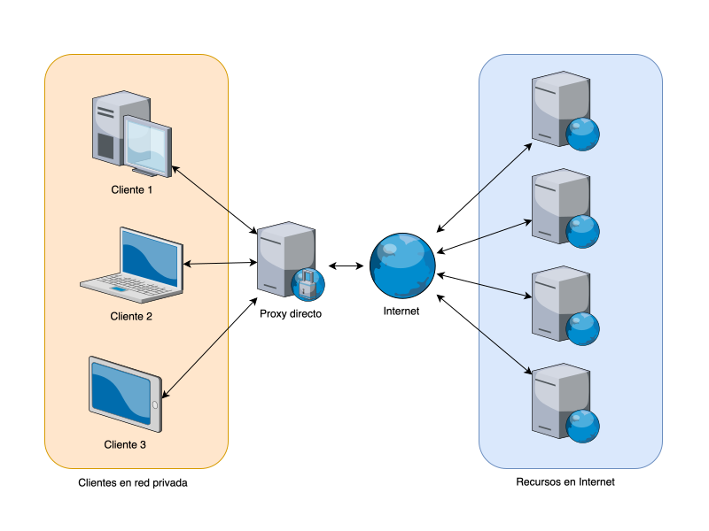
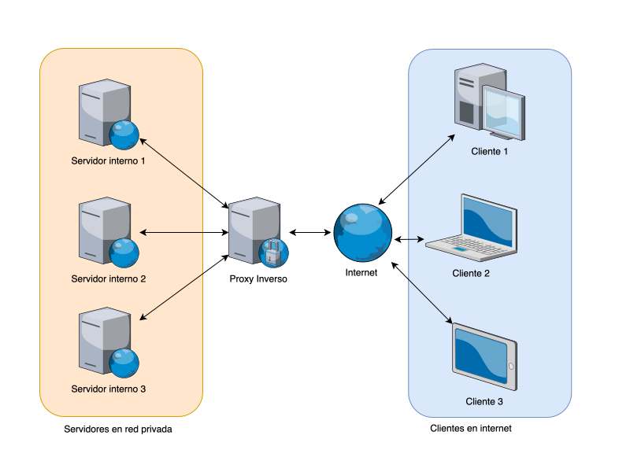

Proxies, WAF y seguridad en aplicaciones¶
Este apartado se centra en la protección del tráfico web y de las aplicaciones que se ejecutan en la red. Se incluyen proxies directos e inversos, los WAF (Web Application Firewalls) y las buenas prácticas que refuerzan la seguridad de las aplicaciones.
1. Proxy directo (Forward Proxy)¶
Un Proxy directo (Forward Proxy) es un servidor que actúa como intermediario entre un cliente (por ejemplo, un navegador web) y el destino final al que queremos acceder (por ejemplo, un servidor web de Internet). Cuando el cliente quiere solicitar un recurso o una página web, en lugar de conectar directamente con el servidor destino, la petición viaja primero al proxy directo. Este proxy evalúa la petición y, si la considera válida, la reenvía al servidor final, obteniendo la respuesta y devolviéndola posteriormente al cliente.

Características principales¶
- Intermediario del cliente
- El proxy directo representa al cliente ante el servidor final. Desde la perspectiva del servidor, quien está realizando la petición es el proxy, no el cliente original.
- Funcionalidades de seguridad y filtrado
- Puede filtrar ciertas URL, restringir el acceso a páginas no autorizadas, implementar controles de acceso según políticas de la organización
- Incluso llevar un registro (log) de las conexiones que se realizan. Permite la realización de auditorías y revisiones posteriores.
- Optimización de tráfico y caché
- En muchas redes empresariales, el proxy se configura para servir contenido en caché. Por ejemplo, si varios usuarios piden la misma página, se sirve la versión almacenada localmente, reduciendo ancho de banda y acelerando la respuesta.
- Anonimato parcial
- Al usar un proxy, la dirección IP pública que verá el servidor destino será la del propio proxy y no la del cliente real. Esto puede servir para ocultar la IP de origen o para saltarse ciertas restricciones geográficas, aunque esta no suele ser la función principal en entornos empresariales.
Configuración del lado del cliente**¶
Para usar un proxy directo, cada equipo cliente suele necesitar configurarse expresamente para que sus peticiones HTTP/HTTPS pasen por dicho proxy. Esto implica indicar la dirección IP y el puerto del proxy en la configuración del navegador o del sistema operativo. En entornos empresariales o educativos, esta configuración se puede automatizar mediante políticas de red (por ejemplo, usando directivas de Active Directory en Windows o scripts de configuración automática de proxy, PAC files, etc.).
Proxy transparente¶
Existe una modalidad llamada proxy transparente, en la que el proxy se inserta en la ruta de red sin que el cliente tenga que hacer ningún cambio en su configuración. El tráfico de los usuarios se redirige automáticamente hacia el proxy (normalmente mediante configuraciones en el enrutador, cortafuegos o un switch de capa 3). Desde el punto de vista del cliente, parece que se conecta directamente a los servidores de destino, pero realmente el tráfico pasa por el proxy, que puede filtrar, cachear o auditar las peticiones sin requerir ajustes en cada equipo.
Ventajas del proxy transparente:
- Fácil de implantar: No exige modificar los navegadores o dispositivos de los usuarios, especialmente útil en grandes redes o entornos con muchos clientes heterogéneos.
- Gestión centralizada: Todas las conexiones pueden pasar por el proxy sin depender de la correcta configuración de cada usuario.
- Filtrado y control: Se implementa de manera uniforme para todo el tráfico de la red.
Desventajas del proxy transparente:
- Complejidad en el enrutamiento: Es necesario configurar adecuadamente la red (normalmente un cortafuegos con NAT o redirección de puertos) para que el tráfico pase por el proxy.
- Limitaciones de cifrado: El tráfico HTTPS requiere técnicas más avanzadas (como inspección SSL) para que el proxy transparente pueda actuar, lo cual complica la configuración y puede generar problemas de privacidad o compatibilidad si no se hace correctamente.
En suma, mientras que en un proxy directo clásico cada cliente declara explícitamente los ajustes del proxy, un proxy transparente “desaparece” a ojos de los usuarios, permitiendo que toda la gestión y filtrado ocurra sin pasos adicionales de configuración en cada dispositivo.
Ejemplo de funcionamiento¶
- El cliente (por ejemplo, un navegador) lanza una petición a
www.ejemplo.com. - El navegador, al estar configurado con el proxy, envía la solicitud al Proxy directo.
- El proxy revisa la solicitud:
- Comprueba si cumple las reglas de filtrado (por ejemplo, si está permitido acceder a esa web).
- Mira si ese contenido ya se encuentra en su caché.
- Si la petición está permitida y no hay contenido en caché (o está desactualizado):
- El proxy reenvía la petición al servidor real de
www.ejemplo.com.
- El proxy reenvía la petición al servidor real de
- El servidor de
www.ejemplo.comresponde al proxy, que almacena la respuesta (opcionalmente en caché) y la envía de vuelta al cliente.
Ventajas y desventajas de proxy directo¶
Ventajas
- Seguridad y control: Permite aplicar políticas de acceso, bloquear webs maliciosas o inadecuadas, y recopilar información de uso.
- Rendimiento: Gracias a la caché, disminuye la carga de la red y mejora el tiempo de respuesta para contenido repetido.
- Anonimato parcial: El servidor final ve al proxy como solicitante en lugar de la IP real del usuario.
Desventajas
- Dependencia: Si el proxy falla, todos los clientes configurados con él pueden quedarse sin conexión a determinados servicios.
- Posibles retrasos: Si el proxy no está bien dimensionado o se satura, puede enlentecer la navegación.
- Mantenimiento: Requiere administración y actualizaciones para asegurar rendimiento y seguridad.
Usos típicos¶
- Redes de instituto o empresa: Controlar y monitorizar el uso de Internet por los estudiantes o empleados.
- Políticas de filtrado: Bloqueo de sitios web no permitidos (por contenidos inapropiados o por baja productividad).
- Optimización del ancho de banda: Muy útil si muchos clientes acceden al mismo contenido, sobre todo en horarios de mayor uso.
Proxies de código abierto¶
Squid¶
Descripción¶
- Squid es quizá el proxy directo más conocido, especialmente en entornos de caché (HTTP/HTTPS/FTP).
- Permite filtrar tráfico, almacenar contenido en caché y gestionar reglas de acceso.
- Muy utilizado en redes de empresas e instituciones educativas.
Enlaces¶
Apache Traffic Server¶
Descripción¶
- Apache Traffic Server es una solución de alto rendimiento para almacenamiento en caché y proxy.
- Diseñado para entornos de gran volumen de tráfico (proveedores de contenidos, grandes redes).
- Soporta extensiones y plugins que amplían sus funcionalidades.
Enlaces¶
2. Proxy inverso (Reverse Proxy)¶
Un proxy inverso, también llamado reverse proxy, es un servicio que se ubica delante de uno o varios servidores (por ejemplo, servidores web) y recibe las peticiones de los clientes desde Internet para luego redirigirlas internamente hacia el servidor o servicio apropiado. A diferencia de un proxy normal (o forward proxy), donde el cliente no se conecta directamente al servidor de destino, en el proxy inverso es el servidor (o una capa intermedia) quien asume la función de “proxy” para gestionar y filtrar las solicitudes entrantes.

2.1. Principales funciones de un proxy inverso¶
-
Distribución de carga
- Se utiliza para balancear el tráfico entre varios servidores, de forma que si uno de los servidores está muy cargado, se reparta la carga con otros.
- Esto mejora el rendimiento del servicio y garantiza una mayor disponibilidad.
-
Caché de contenido
-
Un proxy inverso puede almacenar en caché contenido estático (imágenes, archivos CSS, JavaScript, etc.) o incluso resultados de peticiones dinámicas.
- Al servir estos recursos directamente desde el proxy, se reduce la carga en los servidores de backend y se acelera la respuesta al cliente.
-
Seguridad y ocultación de la infraestructura interna
-
El proxy inverso oculta la dirección y detalles de los servidores reales, dificultando a un atacante conocer la infraestructura exacta de la red interna.
- Puede actuar como primera línea de defensa, filtrando y bloqueando tráfico malicioso antes de que llegue al servidor real.
-
Terminación SSL/TLS
-
Es frecuente que el proxy inverso se encargue de la terminación de las conexiones cifradas (SSL/TLS), de manera que el tráfico interno con los servidores de backend pueda ir en texto claro o con menor coste computacional, y sea el proxy el que gestione los certificados y la comunicación cifrada con el exterior.
-
Monitorización y registro (logging)
-
Dado que todo el tráfico entrante pasa primero por el proxy inverso, se pueden recopilar métricas de acceso, estadísticas de uso y registros de eventos con mayor facilidad.
2.2. Ventajas de un proxy inverso¶
- Rendimiento mejorado: Con la implementación de caché y balanceo de carga, el servicio responde más rápido a las peticiones de los usuarios.
- Escalabilidad: Permite añadir más servidores por detrás cuando aumenta la demanda, distribuyendo el tráfico.
- Seguridad: Oculta la topología de la red interna y puede bloquear peticiones no deseadas o con patrones de ataque conocidos.
- Gestión centralizada de certificados SSL: Simplifica la instalación y renovación de certificados, ya que se concentran en la capa del proxy inverso.
2.3. Buenas prácticas¶
- Mantener el proxy actualizado
- Tanto Nginx como otros proxies inversos (HAProxy, Apache HTTP Server, etc.) liberan actualizaciones de seguridad con frecuencia. Conviene aplicarlas regularmente.
- Optimizar la caché
- Ajustar adecuadamente la directiva de caché para objetos estáticos o contenidos dinámicos según las necesidades de la aplicación.
- Controlar el tiempo de expiración (TTL) para no servir contenido obsoleto.
- Gestión correcta de certificados SSL/TLS
- Usar certificados confiables y mantenerlos actualizados.
- Implantar la terminación SSL en el proxy para simplificar la gestión y reducir la carga en los servidores de backend.
- Monitorización y logs centralizados
- Recopilar y analizar los registros de acceso para identificar patrones de uso o posibles ataques.
- Integrar herramientas de monitorización (Prometheus, Grafana, etc.) para obtener métricas de rendimiento y alertas tempranas.
Proxies inversos de código abierto¶
A continuación, te presento algunos de los principales proxies inversos de código abierto que se utilizan en entornos de producción y aprendizaje:
- Nginx
- Es uno de los servidores web y proxies más populares.
- Destaca por su eficiencia en el manejo de múltiples conexiones concurrentes y su gran capacidad de caché.
- Muy utilizado para balanceo de carga y terminación SSL/TLS.
- HAProxy
- Se especializa en balanceo de carga y alta disponibilidad.
- Muy eficiente en términos de rendimiento y escalabilidad, incluso con miles de conexiones simultáneas.
- Aunque tradicionalmente se ha visto más como un load balancer, también opera como proxy inverso.
- Traefik
- Pensado para arquitecturas modernas, especialmente entornos de contenedores (Docker, Kubernetes, etc.).
- Se integra de forma sencilla con orquestadores para descubrir automáticamente servicios y aplicar reglas de enrutamiento.
- También incluye una interfaz de usuario que facilita la monitorización.
- Envoy
- Inicialmente creado por Lyft, se ha popularizado para el uso en service meshes (por ejemplo, Istio).
- Altamente configurable y extensible, con énfasis en observabilidad y métricas.
- Ideal para entornos de microservicios y configuración dinámica.
3. WAF (Web Application Firewall)¶
Un WAF (Web Application Firewall) es un tipo de cortafuegos especializado en proteger aplicaciones web contra ataques y vulnerabilidades específicas de ese entorno, como inyecciones SQL, cross-site scripting (XSS), desbordamientos de búfer, etc. A diferencia de un cortafuegos tradicional de red (que se centra en filtrar el tráfico a nivel de puertos y protocolos), el WAF inspecciona el contenido de las peticiones y respuestas HTTP/HTTPS para detectar patrones maliciosos dirigidos a la lógica interna de la aplicación.
3.1. Funcionamiento general¶
- Inspección a nivel de aplicación: El WAF actúa en la capa 7 del modelo OSI (la capa de aplicación). Analiza las peticiones que llegan al servidor web y verifica si cumplen con las reglas o políticas de seguridad definidas (por ejemplo, patrones de inyección SQL o scripts maliciosos).
- Filtrado y reglas de seguridad: Normalmente el administrador puede configurar reglas personalizadas o utilizar conjuntos de reglas predefinidas (ej. OWASP ModSecurity Core Rule Set) para detectar y bloquear comportamientos sospechosos.
- Modelo de listas blancas y listas negras:
- Listas negras (Blacklists): Se bloquean o se ponen en cuarentena aquellas peticiones que coinciden con patrones de ataque conocidos.
- Listas blancas (Whitelists): Solo se permiten aquellas peticiones que coinciden con patrones expresamente permitidos (más restrictivo, pero también más seguro si se configura correctamente).
- Inspección de entradas y salidas: El WAF no solo revisa lo que se envía al servidor, sino también las respuestas que se devuelven al cliente, para evitar la fuga de datos sensibles.
3.2. Tipos de despliegue¶
- Basado en red (On-premises): Se instala físicamente como un dispositivo o virtual appliance en la infraestructura local, normalmente delante del servidor web, para actuar como “puerta de entrada”.
- Basado en la nube (Cloud-based): Ofrecidos como servicio por un proveedor. Simplifican la gestión y el mantenimiento, ya que el tráfico se enruta a través de la infraestructura del proveedor y este se encarga de actualizar las reglas y mantener la seguridad.
- Basado en host (Software): Se instala como módulo en el propio servidor web (por ejemplo, ModSecurity para Apache o Nginx). Este enfoque puede ser más barato, pero consume recursos del mismo sistema donde corre la aplicación.
3.3. Beneficios principales¶
- Protección específica de la aplicación: Un WAF entiende la lógica de la aplicación y detecta patrones que un cortafuegos de red no podría.
- Actualizaciones dinámicas: Muchos WAF se mantienen actualizados ante las últimas amenazas, aplicando parches virtuales o reglas de seguridad antes de que la aplicación sea parchada por completo en código.
- Cumplimiento normativo: Herramientas útiles para el cumplimiento de normativas (PCI-DSS, RGPD, etc.) que exigen la protección de datos a nivel de aplicación.
- Visibilidad y registros: Ofrecen reportes detallados de los ataques bloqueados, lo cual ayuda a los equipos de seguridad a investigar y mitigar futuras amenazas.
3.4. Buenas prácticas de uso¶
- Configuración adecuada de reglas: Ajustar las reglas para la aplicación en concreto, evitando falsos positivos o falsos negativos.
- Monitoreo continuo: Revisar los logs y alertas del WAF para detectar nuevas amenazas o comportamientos anómalos.
- Pruebas de seguridad periódicas: Realizar test de penetración y escaneos de vulnerabilidades para verificar que el WAF esté funcionando correctamente y no haya brechas.
- Actualizaciones regulares: Mantener al día el WAF con los parches y reglas de seguridad más recientes, ya que los atacantes evolucionan constantemente.
WAFs de de código abierto¶
1. ModSecurity¶
- Descripción: Es, probablemente, el WAF de código abierto más conocido y utilizado. Funciona como un módulo que puede integrarse con servidores web como Apache, Nginx o IIS.
- Características destacadas:
- Soporta reglas personalizadas y el conjunto de reglas de OWASP (OWASP ModSecurity Core Rule Set).
- Ofrece gran capacidad de inspección, registro y análisis del tráfico HTTP.
- Dispone de una comunidad activa que contribuye con reglas y configuraciones específicas.
4. Coraza WAF¶
- Descripción: Coraza es un WAF más reciente, escrito en Go, y compatible con las reglas de ModSecurity.
- Características destacadas:
- Cuenta con una arquitectura moderna y un rendimiento bastante alto debido a su implementación en Go.
- Soporta el OWASP Core Rule Set (CRS), lo que facilita su adopción para quienes ya están familiarizados con ModSecurity.
- Se integra en diversos entornos y ofrece una API que permite extender y personalizar su comportamiento.
4. CDN (Content Delivery Network)¶
Un CDN (Red de Entrega de Contenido) consiste en una red distribuida de servidores que almacenan y entregan contenido estático o dinámico a los usuarios de forma más rápida y eficiente. El CDN se ubica en muchos sentidos como un “proxy” global: puede funcionar como un reverse proxy que intercepta las peticiones de los clientes y les sirve el contenido desde el nodo más cercano a su ubicación geográfica. De este modo, reduce la latencia y descarga de trabajo al servidor principal.
4.1. Relación con proxy inverso¶
- Un CDN actúa de forma muy similar a un proxy inverso, ya que recibe las peticiones en “sus” servidores distribuidos y, si el contenido no está en caché o está desactualizado, reenvía esa petición a la infraestructura de origen.
- Desde la perspectiva del servidor final, el tráfico procede del CDN (similar a un proxy inverso); desde la perspectiva del usuario, el servicio responde más rápido porque se conecta al nodo CDN más cercano.
4.2. Beneficios principales¶
- Reducción de latencia
- Al localizar servidores de caché en múltiples ubicaciones alrededor del mundo, los usuarios se conectan a un nodo cercano, con menos saltos de red y tiempo de respuesta menor.
- Alivio de carga en el servidor de origen
- El contenido estático (imágenes, archivos CSS/JS, vídeos, etc.) se almacena en los nodos del CDN, evitando que el servidor principal se sature.
- Mayor disponibilidad
- En caso de que un nodo CDN falle, el tráfico se redirige a otro nodo. Esto incrementa la tolerancia a fallos.
- Mitigación de ataques DDoS
- Muchos proveedores de CDN integran sistemas de protección y filtros que actúan como una capa adicional de seguridad, bloqueando trafico malicioso antes de que llegue a la infraestructura de origen.
- Compatibilidad con WAF y SSL/TLS
- Muchos CDN (ej. Cloudflare, Akamai) incluyen servicios de WAF, terminación SSL/TLS y otras funcionalidades de seguridad en la misma plataforma, facilitando su integración.
4.3. Proveedores y herramientas populares¶
- Cloudflare: Ofrece CDN, WAF, proxy inverso y otras soluciones de seguridad.
- Akamai: Uno de los pioneros en servicios de CDN a gran escala, usado por grandes compañías de medios.
- Amazon CloudFront: CDN integrado en la plataforma AWS.
- Fastly: Famoso por su infraestructura de alta velocidad y soporte en tiempo real para cambios de configuración.
4.4. Mejores prácticas con CDN¶
- Configuración óptima de caché
- Definir correctamente los encabezados de caché (Cache-Control, Expires), para que los nodos del CDN sirvan el contenido el tiempo adecuado.
- No sobrecargar con TTLs excesivamente largos que sirvan contenido anticuado.
- Uso combinado con proxy inverso y WAF
- Colocar el CDN como capa frontal, seguido de un proxy inverso propio o un balanceador de carga, y por último el WAF y los servidores internos.
- Asegurar que la configuración DNS y los certificados SSL estén debidamente gestionados.
- Optimización de recursos
- Minimizar y comprimir CSS, JavaScript y otros archivos.
- Garantizar que las imágenes tengan el formato y resolución adecuados para mejorar la velocidad de descarga.
- Supervisión continua
- Monitorizar el rendimiento de los nodos CDN y las tasas de aciertos en la caché (cache hit ratio).
- Ajustar la configuración según la localización de tus usuarios y el tipo de contenido que sirvas.
En esencia, un CDN complementa el trabajo de los proxies inversos y los WAF al acercar el contenido a los usuarios, disminuir la carga en el servidor de origen y, en muchos casos, añadir una nueva capa de protección frente a ciberataques.
5 Buenas prácticas en desarrollo de aplicaciones¶
La seguridad no depende solo de los proxies o WAF; las aplicaciones deben estar “fortificadas” desde su concepción. Algunas recomendaciones clave:
-
Certificados SSL/TLS y configuración de HTTPS
- Uso de certificados válidos emitidos por CA de confianza.
- Configuración de TLS fuerte (deshabilitar protocolos obsoletos como SSLv3 y TLS 1.0).
- Implementación de HSTS (HTTP Strict Transport Security) para forzar el uso de HTTPS.
-
Gestión de contraseñas y autenticación
-
Almacenar contraseñas con hashing y sal (ej. bcrypt, Argon2).
- Autenticación multifactor (MFA) cuando sea posible, sobre todo en áreas críticas.
- Políticas de bloqueo tras varios intentos fallidos.
-
Validación de entradas y outputs
-
Saneamiento de datos y validaciones del lado del servidor (no confiar solo en validaciones de JavaScript).
- Evitar mostrar mensajes de error detallados que ayuden a un atacante a comprender la estructura interna de la aplicación.
-
Integración con SIEM
-
Registro centralizado de eventos relevantes (intentos de inicio de sesión fallidos, cambios de configuración, etc.).
- Correlación de esos eventos con los de otros componentes de seguridad (firewall, IDS, WAF).
- Alertas y notificaciones automatizadas ante patrones sospechosos.
Con esto, se busca endurecer la superficie de ataque y proteger tanto las comunicaciones como la lógica de negocio de las aplicaciones, complementando el trabajo de proxies y WAF.
OWASP¶
OWASP (Open Web Application Security Project) es una organización sin ánimo de lucro a nivel mundial que se dedica a mejorar la seguridad del software. Fundada en 2001, OWASP es ampliamente conocida por proporcionar herramientas, documentación, estándares y recursos educativos gratuitos para ayudar a desarrolladores, ingenieros de seguridad y empresas a identificar y mitigar vulnerabilidades en aplicaciones web.
Principales objetivos de OWASP:¶
- Concienciación: Promover la importancia de la seguridad en el desarrollo de software.
- Recursos gratuitos: Ofrecer guías, herramientas y proyectos abiertos accesibles a cualquier persona interesada en mejorar la seguridad de sus aplicaciones.
- Colaboración: Fomentar la participación de la comunidad global de profesionales de la seguridad.
Proyectos destacados de OWASP:¶
- OWASP Top 10: Lista de las 10 principales vulnerabilidades de seguridad en aplicaciones web. Es uno de los recursos más utilizados para identificar y mitigar riesgos.
- OWASP ASVS (Application Security Verification Standard): Un marco para verificar los controles de seguridad en las aplicaciones.
- Cheat Sheets: Guías rápidas y prácticas para implementar medidas de seguridad específicas.
OWASP se ha convertido en un estándar de referencia para la seguridad en el desarrollo de aplicaciones, utilizado por organizaciones, instituciones educativas y gobiernos de todo el mundo. Es una excelente fuente para aprender sobre las mejores prácticas de seguridad y mantenerse actualizado frente a nuevas amenazas.